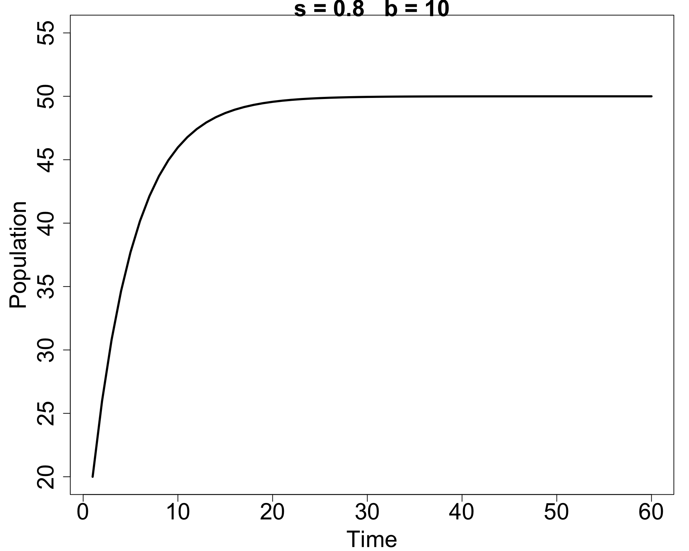
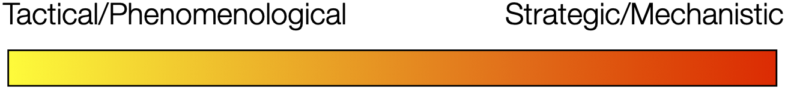
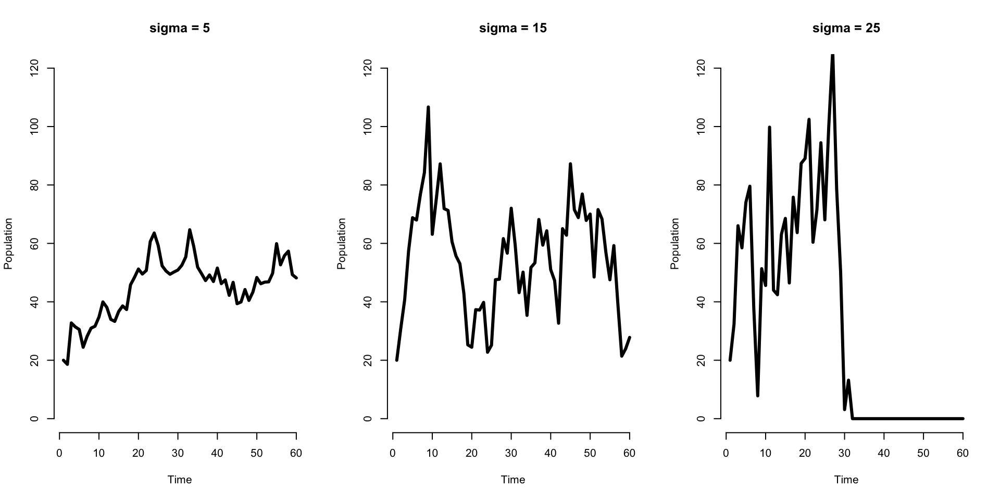

Introduction to Modeling Time-Dependent Population Data
The number of hosts, vectors, pathogens, and infected individuals change over time.
We use models models of various types to: - understand relationships - forecast/predict possible future outcomes

We’ll focus on the tactical end of things here (i.e., no dif eqs)
Suppose we model a population in discrete time as \[\begin{align*} N(t+1) = s N(t) + b(t). \end{align*}\]
Here \(s\) is the fraction of individuals surviving each time step and \(b(t)\) is the number of new births.

In that simplest model the population can’t go extinct!
What if the number of births vary? \[\begin{align*} N(t+1) = s N(t) + b(t) +W(t) \end{align*}\]
Here \(W(t)\) is process uncertainty/stochasticity: we assume it is drawn from a particular distribution, and each year/time we observe a particular value \(w(t)\). E.g., \(W(t) \stackrel{\mathrm{iid}}{\sim} \mathcal{N}(0, \sigma^2)\).
What might we see? When would the population go extinct?

We also have to go out into the field and take some observations of the populations.
Let’s say that we observe \(N_{\mathrm{obs}}(t)\) individuals at time \(t\). How does this relate to the true population size? One possibility is: \[\begin{align*} N_{\mathrm{obs}}(t) = N(t) + V(t) \end{align*}\] where \(V(t)\) is our “observation uncertainty”, and all together this equation describes our observation model.
With the observation model, our full system (process + observation models) might be \[\begin{align*} N(t) & = s N(t-1) + b(t-1) +W(t)\\ N_{\mathrm{obs}}(t) & = N(t) + V(t) \end{align*}\]
plus:
Analysis approach depends on not only the goal of the modeling exercise (understanding vs. forecasting/prediction) but also on details of the way that data are observed
Although we focus on tools this week, we’ll also talk about general modeling considerations and how to think some of these as we conduct an analyses.
A forecast is a prediction or estimate of events into the future.
It differs from a scenario based future predictions in that it doesn’t seek to answer any “what if” questions.
Which could be a forecast vs. a scenario based prediction?